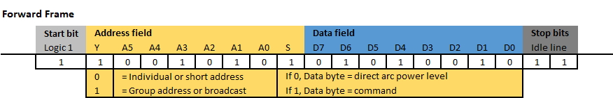
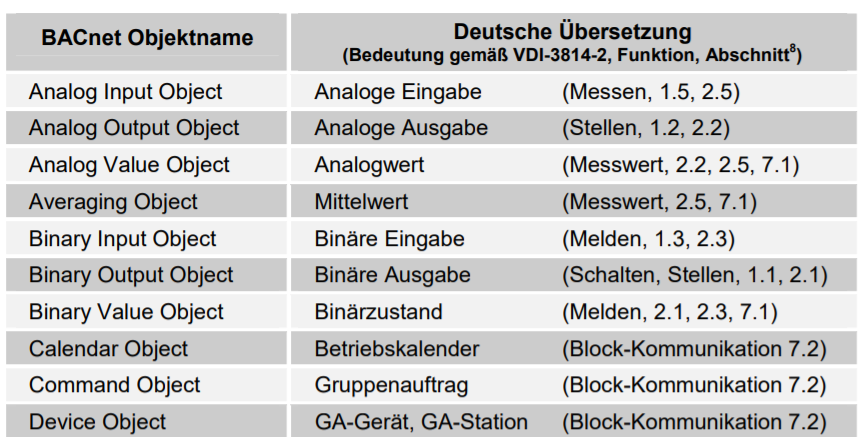
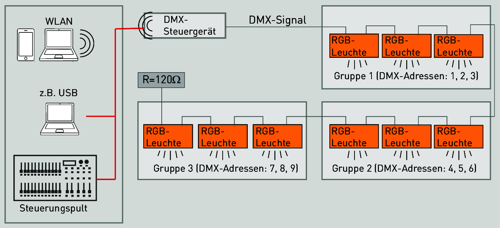

5.4 Bussysteme in der Geäudeautomation
Digital Addressable Lighting Interface (DALI)
üéØ Lernziele
Nach dieser Einheit sind Sie in der Lage dazu - Komponenten zum Aufbau eines DALI-Systems auswählen - die Grundlagen von Szenen und Gruppensteuerung beschreiben - geeigneten Leitungsdurchmesser/Länge einer DALI-Installation bestimmen
DALI Grund-Komponenten
- Stromversorgung (DALI PS1) - Alternativ über Klemme oder Netzteil
- Steuerkontroller (links): Mikrocontoller mit Buszugriff mit Tastern oder anderen Schnittstellen verbunden
- LED oder Leuchten-Treiber (rechts): Mikrocontoller und Versorger der Leuchtmittel mit Energie
- DALI-USB: Schnittstelle zur Programmierung ggf. ersetzt durch SPS zur Steuerung des Bussystems

- Protokoll für lichttechnische Betriebsgeräte
- kein gesamtheitliches Bussystem für Gebäudesystemtechnik
- dezentrales Lichtmanagement für max. 64 Teilnehmer (Betriebsgeräte) mit frei definierbaren 16 Gruppen und 16 Szenen
- über Gateways auch in die Gebäudesystemtechnik (KNX, BACnet, etc,) integrierbar

Gruppen
- Mehrere Leuchtmittel werden zusammengefasst und können über eine gemeinsame Gruppen-Adresse angesprochen

Szenen
- Vordefinierte Einstellungen für verschiedene Gruppen und Leuchtmittel für bestimmte Situationen
Technische Grundlagen
- Separates Kabel mit zwei Signaleitern und Spannungsversorgung
- Spannung der Busleitung \(9,5 - 22,4 \text{ V}\)
- Systemstrom max. \(250 \text{ mA}\) (zur Versorgung keiner Betriebsgeräte z.B. Steuergeräte für Schalter)
- Datenübertragungsgeschwindigkeit \(1200 \text{ Baud}\)
- Maximale einfache Leitungslänge \(300 \text{ m}\) (bei \(1.5 \text{ mm²}\))
Aufbau

Merkmale von DALI
- Installation:
- Versorgungs- und Steueradern können zusammen im selben Kabel verlegt werden.
- Die Verdrahtung kann in Reihe, sternförmig oder in einer gemischten Form erfolgen.
- Keine Polarität: Die Polarität (DA+/DA-) der DALI-Steuerleitung muss nicht beachtet werden
- Verteilte Intelligenz:
- Jeder Controller arbeitet als "Master" und kontrolliert dabei die Kommunikation auf (Multi-Master) der Steuerleitung.
- Gewisse Parameter sind dabei direkt im DALI-Betriebsgerät abgelegt (z.B. Szenenwerte, Gruppenadresse).
Technische Hintergründe
- Kodierung:
- Differentieller Manchester-Code
- High Pegel (idle): \(9.5 \text{ bis } 22.5 \text{ V}\)
- Low Pegel: \(-6.5 \text{ bis } 6.5 \text{ V}\)
- Buszugriff:
- Multi-Master
- CS/MA - CA
- Echtzeitfähig?
- nein
Telegramm-Format

- FF: Forward Frame eines Masters
- BF: Backward Frame Antwort eines Slaves
- 16-und-24-Bit-Telegramme: Geräte zu konfigurieren, Parameter abzufragen oder Steuerbefehle oder Ereignisse Quelle


1-1-01110...
Stromversorgung
- Versorgt den gesamten DALI-DALI-Kreis mit 24 V Gleichstrom
- z.B. Leuchtmittel >5 W, Steuercontroller
Steuermodule
- Bieten Eingänge für Taster (Lichtschalter)
- Können Logik für die Steuerung basierend auf den Eingaben ausführen

Steuermodule Betriebsarten
| Betriebsart | Beschreibung |
|---|---|
| MC | Einfachtaster und/oder Doppeltaster und/oder Schalter |
| SC-A | Einfachtaster für Szenenaufruf |
| GC-A | Einfachtaster und/oder Doppeltaster für Leuchtengruppen ein/aus/gedimmt |
| TuWh | Doppeltaster für Intensität und Farbtemperatur von "Tunable White" |
Touchpanele
- Ermöglichen komplexere Eingaben als einfache Taster
- Ausgaben möglich: z.B. aktuelle Szene mit mit Licht hinterlegen
Sensoren
- Erfassen Umweltparameter, wie Helligkeit und Bewegungen

Betriebsgeräte
- Steuerung und/oder Stromversorgung von Leuchtmitteln (z.B. LEDs)
- Teilweise Transformatoren und Gleichrichter für \(230V / AC\)
- Mehrere Betriebsgeräte können zu einer Gruppe zusammengefasst werden

Technischer Rahmen einer Installation
- Max. 64 DALI-Betriebsgeräte (\(2^6\) Adressen)
- Max. 16 DALI-Gruppen (\(2^4\) Adressen)
- Max. 16 DALI-Szenen (\(2^4\) Adressen)
- Maximaler Strom der Stromversorgung (DALI PS1: \(200 \text{ mA}\) bzw. DALI PS2 \(240 \text{ mA}\)).
- Max. Leitungslänge aus Spannungsabfall (\(2 \text{ V}\) d.h. \(300 \text{ m}\) bei \(1,5 \text{ mm²}\))
Stromaufnahme berechnen
- Ist die Stromversorgung stark genug für alle Betriebsmittel?
- Hierbei sind nur die Controller gemeint, die durch die DALI-Leitung versorgt werden
Software-seitige Konfiguration
Je nach Bussystem stellen verschiedene Anbieter, verschiedene Softwarelösungen bereit.
Individualadressen und Gruppen
- jeder DALI Teilnehmer hat eine (von 64) Individualadressen
- Mit der Individualadresse kann jedes einzelne Betriebsgerät identifiziert und angesteuert werden.
- Mehrkanaligen Betriebsgeräten sind ggf. mehrere Adressen zuzuordnen (z.B. Dimmen + Farbe oder Warm- + Kaltweiß)
- Zusätzlich zu den Individualadressen bis zu 16 Gruppenadressen
Szenen
- bis zu 16 Lichtszenen (Einstellung verschiedener Beleuchtungssituationen)
- jedem Vorschaltgerät kann ein individueller Lichtwert je Szene hinterlegt werden
- Lichtszenen unabhängig von der Gruppenzuordnung

Farbsteuerung
- Mögliche Farbkanäle
- RGB: Drei Kanäle für rote, grüne und blaue LEDs
- RGBW: RGB + weißen Lichtquelle (4)
-
RGBWW: Weiß-Weiß (tunable white) für die Wärme-Steuerung des weißen Lichts (2)
-
Ansteuerung:
- DT6: Jeder Farbkanal hat eine eigene DALI-Adresse. Statt 64 können bei RGBW nur nuch 16 Leuchtmittel gesteuert werden
- DT8: Nur eine Adresse pro Gerät
Anwendungsbeispiel Besprechungszimmer
Besprechungszimmer für ca. 10 Personen
- 6 LED Langfeldleuchten und 2 LED Downlights.
- je eine Gruppe für Langfeldleuchten und Downlights
- Bedienung
- an Tür: DALI XC (SC Modus) mit den Szenen „Beleuchtung ein" und „Beleuchtung aus"
- an Fensterfront 2 DALI XC (SC und GC): Aufrufen von vier Szenen und das individuelle Dimmen der beiden Leuchtengruppen.


Ausfallsicherheit
- da Bussysteme aus mehreren Komponenten bestehen, wird das Fehlermanagement komplexer
- Single-Point-of-Failure: Ein Teil des Systems, dessen Ausfall zum Totalversagen führen kann
- Neben redundanter Auslegung kann eine Fehler-Analyse helfen resiliente Systeme zu entwerfen

Einfluss-Analyse
- was-wäre-wenn?
- Für jede Komponente wird untersucht: was passiert, wenn diese Komponente ausfällt
- Was wäre der gewünschte Zustand des Systems? (i.d.R. festgelegt durch die Aktoren)
Beispiel: Beleuchtung in Treppenhäusern
- Licht sollte nicht ohne Bedarf brennen
- Licht kann über Taster, Bewegungsmelder oder GLT aktiviert werden
- In der GLT kann der Systemzustand überwacht werden
- im Falle eines Notfalls muss das Licht in jedem Fall brennen

Buskomponenten
| Komponente \ Aktoren | 1 Beleuchtung Notausgang | 2 Anzeige Gebäudeleittechnik | Wie wird 1 erreicht? | Wie wird 2 erreicht? |
|---|---|---|---|---|
| LED | AN | Defekte Lampe wird angezeigt | ||
| Vorschaltgerät | AN | Defektes Vorschaltgerät wird angezeigt | ||
| Stromversorgung | AN | Ausfall wird angezeigt | ||
| Busleitung | AN | Störung wird angezeigt |
| Komponente \ Aktoren | 1 Beleuchtung Notausgang | 2 Anzeige Gebäudeleittechnik | Wie wird 1 erreicht? | Wie wird 2 erreicht? |
|---|---|---|---|---|
| Steuercontroller | AN | Defekter Steuercontroller wird angezeigt | ||
| Taster | AN | Defekter Taster wird angezeigt | ||
| Bewegungsmelder | AN | Defekter Taster wird angezeigt |
| Komponente \ Aktoren | 1 Beleuchtung Notausgang | 2 Anzeige Gebäudeleittechnik | Wie wird 1 erreicht? | Wie wird 2 erreicht? |
|---|---|---|---|---|
| LED | AN | Defekte Lampe wird angezeigt |
- 1: Nur durch Redundanz möglich
- 2: Das Vorschaltgerät muss in der Lage sein den Ausfall der LED zu erkennen und an die GLT übermitteln
| Komponente \ Aktoren | 1 Beleuchtung Notausgang | 2 Anzeige Gebäudeleittechnik | Wie wird 1 erreicht? | Wie wird 2 erreicht? |
|---|---|---|---|---|
| Vorschaltgerät | AN | Defektes Vorschaltgerät wird angezeigt |
- 1: i.d.R. Nicht möglich
- 2: Regelmäßiges ansprechen des Vorschaltgerät durch GLT. Meldung bei nicht erreichen
| Komponente \ Aktoren | 1 Beleuchtung Notausgang | 2 Anzeige Gebäudeleittechnik | Wie wird 1 erreicht? | Wie wird 2 erreicht? |
|---|---|---|---|---|
| Stromversorgung | AN | Ausfall wird angezeigt | ||
| * 1: i.d.R. Nicht möglich | ||||
| * 2: Regelmäßiges Ansprechen des Vorschaltgerät durch GLT. Meldung bei nicht erreichen |
| Komponente \ Aktoren | 1 Beleuchtung Notausgang | 2 Anzeige Gebäudeleittechnik | Wie wird 1 erreicht? | Wie wird 2 erreicht? |
|---|---|---|---|---|
| Busleitung | AN | Störung wird angezeigt |
- 1: Bei Fehlersignal auf Busleitung schaltet das Vorschaltgerät an
- 2: Regelmäßiges Ansprechen des Gateways durch GLT. Meldung bei Problemen
| Komponente \ Aktoren | 1 Beleuchtung Notausgang | 2 Anzeige Gebäudeleittechnik | Wie wird 1 erreicht? | Wie wird 2 erreicht? |
|---|---|---|---|---|
| Steuercontroller | AN | Defekter Steuercontroller wird angezeigt |
- 1: Bei Ausbleiben eines Steuerbefehls an Vorschaltgerät für länger als konfigurierte Zeit wird dies als Befehl zum Anschalten interpretiert
- 2: Regelmäßiges Ansprechen des Steuercontrollers durch GLT. Meldung bei nicht erreichen
| Komponente \ Aktoren | 1 Beleuchtung Notausgang | 2 Anzeige Gebäudeleittechnik | Wie wird 1 erreicht? | Wie wird 2 erreicht? |
|---|---|---|---|---|
| Bewegungsmelder / Taster | AN | Vermuteter Defekt wird angezeigt |
- 1: Bei Ausbleiben eines Steuerbefehls an Vorschaltgerät für länger als konfigurierte Zeit wird dies als Befehl zum Anschalten interpretiert
- 2: Bei längerem Ausbleiben eines Steuerbefehls der Steuercontroller wird eine Warnung angezeigt
KNX
Lernziele
- Studierende können das Einsatzgebiet eines KNX-Systems beschreiben
- Studierenden können typische Aktoren und Sensoren eines KNX-Systems benennen
ü߆ KNX Eigenschaften
- ein Feldbus zur Gebäudeautomation
- Fokus zunächst auf Raumautomation
- Nachfolger des Europäischen Installationsbus (EIB)
- Einführende Erklärung

ü߆ Feldbus-Systeme zur Geb√§udeautomation
- KNX trennt die Gerätesteuerung und Stromversorgung
- Stromversorgung mit Wechselspannung (rot)
- Steuerungsnetz (=EIB/KNX-Bus - grün) mit \(30 \text{V DC}\)

{kind=link}
ü߆ Sensor-Aktor-Prinzip

- Sensoren erkennen Ereignisse im Gebäude (Tastenbetätigung, Bewegung, Über-/Unterschreitung eines Temperaturwerts etc.) und wandeln diese in
- Telegramme (Datenpakete) um
- Aktoren empfangen Telegramme und wandeln diese in Aktionen um
- Multi-Master-System: Alle Sensoren sind Master
- CSMA/CA (für Funkübertragungen) bzw. CSMA/CR-Prinzip (für kabelgebundene Übertragungen)
ü߆ KNX Ablauf
- findet ein Ereignis statt, sendet der Sensor die Nutzinformation (z.B. Schalter wurde geschaltet oder Windgeschwindigkeit beträgt 8km/h)
- alle Aktoren hören die Busleitung ab und regieren, wenn Sie angesprochen wurden mit der vorprogrammierten Handlung
- Vorteil: Dezentralität - keinen Totalausfall
- Nachteil: gesteigerte Programmieraufwand. Jeder Teilnehmer muss mit einem Programmiergerät adressiert sowie mit der Applikation, den Parametern und Gruppenadressen programmiert werden.
Sensoren und Aktoren

ü߆ Dezentralit√§t
- bei KNX ist kein zentrales Steuergerät notwendig
- Intelligenz über alle Teilnehmer verteilt (jedes Gerät hat mindestens einen Mikroprozessor)
- Ausfallsicherheit
- Zentrale Geräte, wie SPS möglich

Maximalgröße
- Mindestens ein Sensor und Aktor
- theoretisch mehr als 50.000 Teilnehmer möglich
- Erweiterung einer Anlage muss einer vorgeschriebenen Topologie folgen (vgl. Subnetting bei TCP/IP-Netzen)
Übertragungsmedien
- KNX Twisted Pair (KNX TP): verdrillte Zweidrahtdatenleitung (Busleitung)
- KNX Powerline (KNX PL, "D-Lan"): Übertragung über das vorhandene 230 V-Netz
- KNX Radio Frequency (KNX RF): Übertragung über Funk
- KNX IP: Übertragung über Ethernet

KNX Zweidraht (TP)
- Busleitung versorgt alle Busteilnehmer mit Daten und Betriebsspannung (\(24 \text{V DC}\)).
- Die Spannungsversorgungen speisen 30 V in das System ein.
- Busteilnehmer arbeiten bei Spannungen zwischen \(21 \text{ bis }30 \text{V}\) fehlerfrei.
Telegrammaufbau - KNX-TP

- Kontrollfeld die Priorität, ob ein Telegramm wiederholt wurde
- Adressfeld physikalische Adresse des Senders und Empfängers (Physikalische Adresse oder Gruppenadresse)
- Datenfeld bis 16 Byte Nutzdaten
- Sicherungsfeld für Paritätsprüfungen
- zufälliger Buszugriff: CSMA/CA-Verfahren (Carrier Sense Multiple Access / Collision Avoidance )
Kopplung bei komplexeren Aufbauten
- häufig hierarchische Topologien
- Ethernet als leistungsfähiger Backbone und für komplexe (KNX IP) Geräte
- KNX TP, KNX PL und KNX RF für Anbindung verteilter Sensoren und Aktoren
ü§ì Hierarchie
- Linie: kleinste Installationseinheit bei KNX TP mit Spannungsversorgung und 64 Busteilnehmer
- Linien sind durch Drosseln voneinader getrennt
- bis 15 Bereiche können über Bereichskoppler an einer Bereichslinie zu einem Gesamtsystem erweitert werden

ü§ì Physikalische Adressen
-
jedes Gerät hat eine Nummer
Bereich.Linie.Gerät -
Beispiele:
- 1.5.0: Systemkoppler, der die fünfte PL-Linie mit der TP-Hauptlinie im ersten Bereich koppelt.
- 2.3.20: Busteilnehmer mit der laufenden Nummer 20 in der dritten Linie des zweiten Bereichs

ü§ì Gruppenadressen
- Aktoren und Sensoren können Gruppen zugeordnet werden
- Hierbei gibt es drei Ebenen also z. B.: [Keller – Abstellraum – Rauchwarnmelder – Testalarm] [EG – Küche – Rollladen – Auf/Ab] [Garage – Werkbank – Wandlicht – Status]

Einbau KNX im Schaltschrank

Einbau Sensoren und mechanische Aktoren
- mechanische Aktoren und Sensoren werden im Feld verbaut
ü߆ Konfiguration KNX
- kommerzielle, herstellerunabhängige Engineering Tool Software ETS®
- erlaubt die Planung, Projektierung und Inbetriebnahme

ü§ì Produkte importieren
- damit angeschlossene Produkte bekannt sind
- Katalog im knxprod-Format wird importiert
- knxprod-Dateien i.d.R. auf Herstellerwebsite

Gruppenadresse zuweisen

Werte und Funktionen zuweisen

Zukunft von KNX
- Trend zu Vernetzung auf IP-Ebene
- Datenraten nicht für Multimedia geeignet
- Gewachsenes Ökosystem mit vielen Anbietern (Netzwerkeffekte)
- Lebensdauer von Gebäudeautomatsierung eher lang
- ▶️ voltus: KNX-Grundlagen
Building Automation and Control networks (BACnet)
ü߆ BACnet
- entwickelt durch American Society of Heating, Refrigeration, and Air Conditioning Engineers Inc
- Fokus zunächst auf Heizungs-, Lüftungs- und Klimatechnik
- Verbindung von
- Feldebene - Fühler und Antriebe
- Automations- (DDC-Geräte, Controller)
- Managementebene (Gebäudeleittechnik)

Anwendungsgebiet BACnet
- Protokoll kann auf beliebigen Betriebssystemen und Hardware-Plattformen implementiert werden
- standardisiert auch komplexe Transaktionen (z.B. Alarm-Routing, Historisierung, Überwachung des Gerätestatus, Zeit- und Kalenderfunktionen, Datensicherung etc.)
- kein Plug-And-Play System wie KNX
- keine fertigen Objekte mit standardisierter Funktion

Objektorientierung
- Reale Geräte und konzeptuelle Objekte können mittels Objekten abgebildet werden
- Output-Objekttypen: physikalische Ausgänge wie einen 0-10V-Ausgang oder einen Prozentsatz eines Ventil-Aktors.
- Input-Objekttypen: physischen Hardware-Eingang, der mit dem Gerät verbunden ist, z. B. ein Temperatur- oder Helligkeitssensor
- Value-Objekttypen: virtuelle Informationen wie einen Sollwert oder einen Regelparameter darzustellen.
Objektorientierung am Beispiel binärer Eingang
Bisher: Ein Eingang - eine Variable/Wert:
bInAnwesenheitErkannt : BOOL;
bInAnwesenheitErkannt := True;
Mit BACnet werden Objekte detaillierter beschrieben:
bInAnwesenheitErkannt = { "Object_Identifier" : 0,
"Object_Name" : "Anwesenheitssensor",
"Present_Value" : True,
"Out_of_Service " : False
}
Objekt-Typen
- Konformitätsklassen müssen gewisse Objekte bereitstellen

Darstellung eines BACnet-Objects (Analog Value) in Twincat

Darstellung eines BACnet-Objects (Analog Value) als Funktionsbaustein

Weitere Objekt-Typen aus ISO-Norm 16484-5
Access Credential, Access Door, Access Point, Access Rights
Access User, Access Zone, Accumulator, Alert Enrollment
Analog Input, Analog Output, Analog Value, Averaging
Binary Input, Binary Lighting Output, Binary Output, Binary Value
BitString Value, Calendar, Channel, CharacterString Value
Command, Credential Data Input, Date Pattern Value
Date Value, DateTime Pattern Value, DateTime Value
Device, Elevator Group, Escalator, Event Enrollment
Event Log, File, Global Group, Group, Integer Value, Large Analog Value
Life Safety Point, Life Safety Zone, Lift, Lighting Output
Load Control, Loop, Multi-state Input, Multi-state Output
Multi-state Value, Network Port, Network Security, Notification Class
Notification Forwarder, Octetstring Value, Positive Integer Value, Program
Pulse Converter, Schedule, Structured View, Time Pattern Value
Time Value, Timer, Trend Log, Trend Log Multiple
BACnet Dienste (Services)
- ca. 40 Services beschreiben, wie Geräte Informationen austauschen
- fünf Bereiche
- Objektzugriff
- Filetransfer
- Alarm- und Event-Funktionen
- Remote Device Management
-
Virtual Terminal
-
Je nach Geräteprofil sind gewisse Dienste vorgeschrieben
- Ein Sensor (Geräteprofil) sollte einen Alarm (Dienst) auslösen können
- Der Alarm könnte auf einen Analogwert oder dem Mittwert eines Analogwertes basieren

"Bus"-Eigenschaften
- 22 Bit für Adressierung (ca. 4 Mio Adressen)
- Twisted Pair (max \(1200 \text{ m}\)) oder Ethernet möglich
- Master/Slave mit Token Passing
- Server-Client Prinzip
- jeder Teilnehmer kann Services der anderen als Client aufrufen
Weitere Bussysteme im der Gebäudeautomatisierung
Modbus
- De-facto-Standard für SPS in der Automatisierung
- Master-Salve-Architektur
- Teilweise auch in Gebäudeautomatisierung eingesetzt

M-Bus
- Europäischer Standard (genormt in EN 13757) für ein Kommunikationssystem zur Zählerdatenübertragung
- Typische Anwendungen: Gaszähler, Stromzähler, Wärmezähler, Wasserzähler, Rauchmelder
- \(300 \text{ bis } 9600 \text{ Baud}\)
- Master-Slave-Architektur
- Sämtliche Hersteller von M-Bus-Zählern bieten den Download der Spezifikation der übertragenen M-Bus-Daten ihrer Zähler an.
Local Operating Network (LON)
- neutralen Informationsaustausch zwischen Anlagen und Geräten von verschiedensten Herstellern
- Logikknoten (Nodes) in Sensoren, Aktoren und Controller
- Dezentrales Multi-Master System basierend auf den Aktionen der Nodes
- Programmierung über LonTool

Local Control Network (LCN)
- proprietäres Gebäudeautomationssystem für Wohn- und Zweckbauten (Issendorff KG)
- dezentral über identische LCN-Module
- eine LCN-Programmiersoftware LCN-PRO
Standard Motor Interface (SMI)
- kein volles Gebäudebussystem
- Ergänzung als Schnittstelle zu
- Rollladen- und Sonnenschutzantriebe
- Fensterantriebe
- Software SMI-easyMonitor
Funktionsweise von Innen- und Außenbeschattung

- Lamellen-Nachführung (Blendschutz und Energieoptimierung)
- Verschattungs-Korrektur (Energieoptimierung)
- Witterungsautomatik (Produktschutz)
- Thermoautomatik (Energieoptimierung)
- Zeitprogramme (Automatisierung von repetitiven Aufgaben)
- Schockautomatik (Einbruchschutz)
DMX (Lichttechnik)
- Bühnenbeleuchtung
- auch in der Architekturbeleuchtung
- verdrillten, geschirmten, zweiadrigen Steuerleitung als Strang

Teilnehmer und Adressierung
- viele Teilnehmer
- ggf. unter Verwendung von mehreren Repeatern
- Adressierung erfolgt am Betriebsgerät (Dip-Schalter oder Software)
Auswahl funk-basierter Feldbussysteme
- häufig genutzte Frequenzbänder liegen bei 433 MHz (Babyphone, Rauchmelder), 868 MHz (Alarmanlagen) und 2,4 GHz (WLan).
- Frequenz korreliert positiv mit Übertragungsrate und negativ mit Reichweite
ZigBee (Connectivity Standards Alliance)
- für geringe Datenmengen
- geringer Energieverbrauch Anwendungen in Wohn- und Nichtwohngebäuden
- Sensorabstände bis \(100 \text{ m}\)
- Ad-hoc-Netzwerk über ZigBee-Router
- Steuerung von Audio-Video-Technik, Waschmaschinen, Kaffeeautomaten
- evtl. Weiterentwicklung in Matter
Bluetooth (Low Energy)
- Industriestandard für kurze Funkdistanz (WPAN)
- Smartphone-Steuerung, Audiotechnik
- Ad-hoc-Netzwerk über Bluetooth Mesh
- Verschiedene Ausprägungen (Reichweite, Energieverbrauch, etc.)

Enocean
- herstellerübergreifenden Standard mit batterieloser bidirektionaler Funktechnik
- kosten- und zeitsparende Installation
- Sensoren und Schalter (Piezoelektrizität) beziehen Energie aus Umgebung
- Sensoren für Temperatur, Helligkeit, Bewegung
- Aktoren als Schalter, Relais, Dimmer

Weitere
-
Z-Wave funkbasierter Standard für Wohngebäude Steuerung von Heizung, Lüftung, Klimaanlagen, Beleuchtung, Sicherheitstechnik
-
WirelessHART Kommunikation für industrielle Feldgeräte, Anwendung für große Distanzen
-
WirelessKNX einfache Nachrüstung von KNX-Komponenten über Funk-Buskoppler
-
Wireless M-Bus europäischer Standard für drahtlose Kommunikation zwischen Zählern für Strom, Gas, Wärme, Wasser
-
WLAN einbindung einzelner Produkte. Hoher Energieverbrauch.
-
Long Range Wide Area Network (LoRaWAN) energieffizientes Senden kleiner Datenmengen über große Strecken